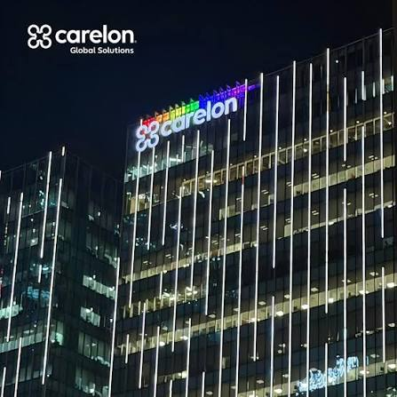
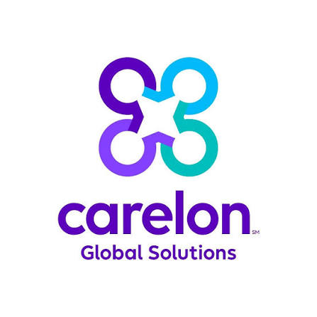
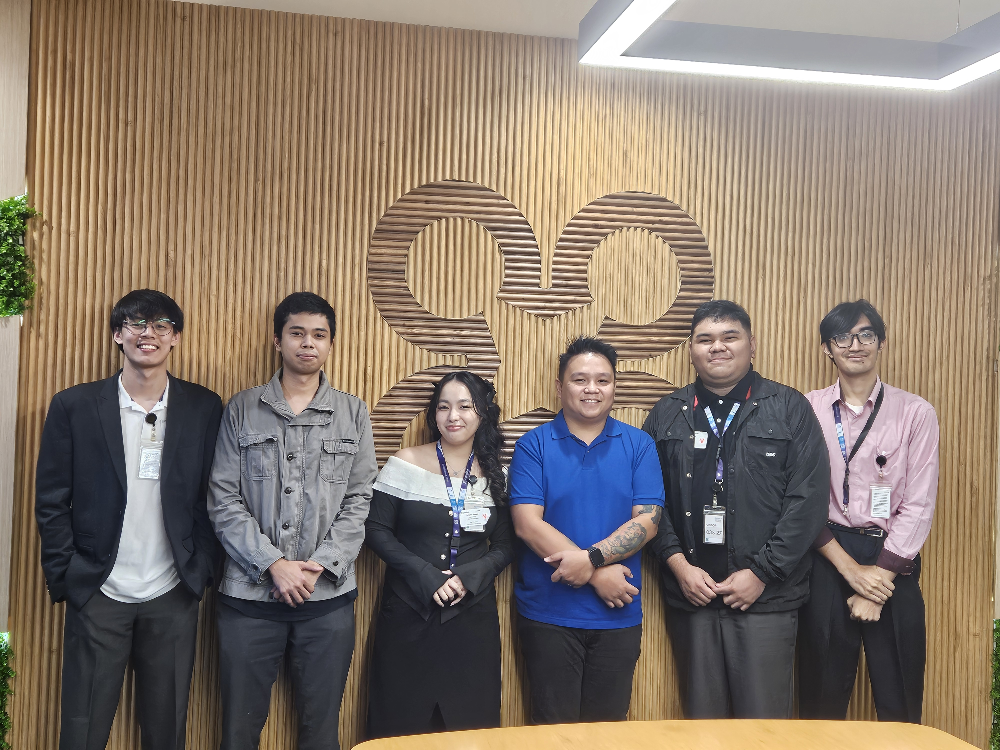
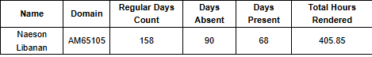
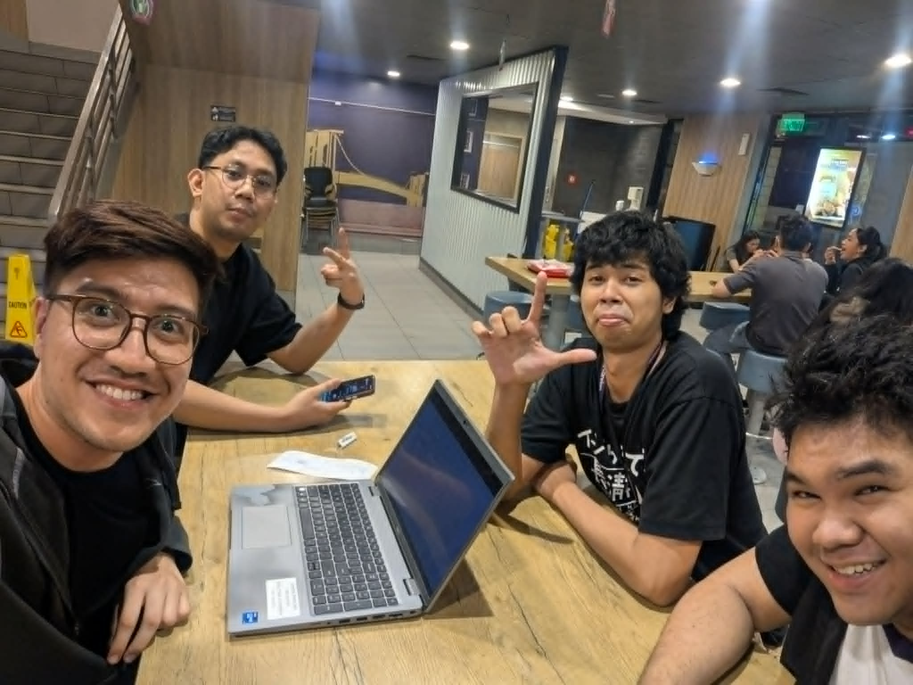
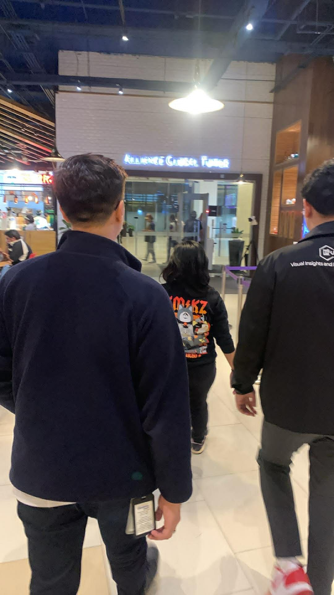

Practicum Report
500 HoursA Portfolio Presented to the Faculty of the College of Information Technology, Southville International School and Colleges.
In Partial Fulfillment of the Requirements for the Degree of
Bachelor of Science in Information Technology
Table of Contents
Introduction
a. Rationale
I chose this practicum because I wanted to explore Data Analytics. Data has become one of the most important parts of how the internet and modern organizations operate, so building real experience in this field felt valuable for my growth. My specialization is cybersecurity, and understanding how data is collected, cleaned, and turned into insight strengthens that foundation security and analytics both depend on understanding data deeply. I saw this training as a chance to gain practical, industry-level skills I couldn't fully get inside the classroom.
b. Work / Training / Project Expectations
Before starting, I expected to learn how to turn raw data into something meaningful, like dashboards and reports. I wanted to understand the full process analysts follow to produce insights for stakeholders from gathering and cleaning data, to analyzing it, to presenting it in a clear and useful way. I also hoped to become comfortable with the tools professionals actually use on the job, such as Excel and Power BI.
Organization Profile
a. History & Background (with Mission & Vision)
Carelon Global Solutions Philippines, formerly Legato Health Technologies, is a healthcare-focused technology and business solutions company. It was first established in the Philippines in 2018 and rebranded to Carelon Global Solutions in January 2023. The company grew rapidly since its inception, expanding to multiple offices across the country, including locations in Metro Manila and Iloilo, supported by a large local workforce of thousands of skilled professionals.
Mission: To transform how healthcare works by making healthcare processes connected, integrated, and most importantly simple and seamless, using data and technology to make the world a healthier place.
Vision: To elevate health into a greater purpose by uniting data-driven digital solutions with top-level talent, building seamless processes and operations that lead to better access to health services and putting people first.
b. Nature of Business
Carelon Global Solutions operates in the healthcare technology and business process (BPO) industry. Born out of one of the largest health plans in the U.S., the company provides digital solutions, clinical operations support, and English-language call center services that streamline the business operations of health plans and health systems. Its teams include systems analysts, customer care representatives, automation engineers, accountants, clinical nurses, and data professionals all working to make healthcare operations more efficient.
c. Organizational Chart
d. Contact Information & Vicinity Map
- Office (BGC):Alliance Global Tower, 11th Avenue corner 36th Street, Bonifacio Global City, Taguig, Philippines
- Email:RecruitmentPH@carelon.com
- Website:https://www.carelonglobal.ph/
- LinkedIn:linkedin.com/company/carelonglobalsolutionsphilippines
e. Organization Images



Training / Project Profile
a. Training / Project Description
The training gave me a step-by-step path into becoming a data analyst. It started with the fundamentals and gradually built up to real analytical work. I learned to use Excel for data cleaning, formulas, and functions, then moved into Power BI, where I worked with Power Query for shaping data and DAX for creating measures and calculations. Along the way I learned about proper data preparation, building visualizations, and designing reports that communicate insights clearly. The whole experience was structured so that each skill built on the last.
b. Nature of Training / Project
The training was task-driven and designed for growth. We were given specific tasks, guided courses, and hands-on activities meant to develop real analytical skills. Everything led toward a capstone project at the end of the OJT: building a working dashboard for the company using data provided for a specific department. The tasks weren't just theoretical they mirrored the actual work of a data analyst, which made the learning practical and relevant.
c. Training / Project Milestones
- Orientation — introduction to the company, team, and expectations.
- Demonstration — mentors showed the tools and workflows.
- Practice — guided exercises in Excel, Power BI, Power Query, and DAX.
- Task Assignment — structured tasks and reports assigned by mentors.
- Capstone / Deployment building and presenting the department dashboard.
Observations
a. Competitive Advantages
The biggest advantage of this training was the real, hands-on knowledge and skills it gave me for data analytics. Instead of only theory, I got to practice with the same tools used in the industry. The mentors and employees who guided us were knowledgeable and, just as importantly, kind and patient. They took time to teach, gave clear tasks, and were approachable whenever I had questions, which made the whole learning environment supportive and effective.
b. Overall Observation
Overall, my experience was positive. The people were welcoming and genuinely helpful, and the tasks consistently pushed me to grow. Every activity added something to my skill set in data analytics, and I left each week knowing more than I did before. The combination of good people and meaningful work made the practicum a valuable experience.
Anecdotal Reports
a. Periodic Reports — Daily
OJT ran part-time from January 16 (orientation) onward. Absences are marked in red. Use the Back / Next buttons to page through the log.
| Date | Daily Activities |
|---|---|
| January 16, 2026 | Orientation — introduction to Carelon, overview of the OJT program, company policies, and workplace expectations; met the department team and mentors. |
| January 20, 2026 | Onboarding — completed requirements, set up company accounts and workstation, and gained access to internal tools and learning platforms. |
| January 22, 2026 | Walkthrough of the department's function and how data analytics supports healthcare operations; reviewed the OJT learning roadmap. |
| January 27, 2026 | Began self-study on data analytics fundamentals; took notes on the role and workflow of a data analyst. |
| January 29, 2026 | Started Excel fundamentals — interface, worksheets, and basic data entry through guided exercises. |
| February 3, 2026 | Practiced Excel formulas and basic functions (SUM, AVERAGE, COUNT). |
| February 5, 2026 | Learned data types, formatting, and organizing data into tables; sorted and filtered sample datasets. |
| February 10, 2026 | Self-study on data cleaning concepts — handling blanks, duplicates, and inconsistent entries. |
| February 12, 2026 | Absent — sick leave. |
| February 17, 2026 | Practiced cleaning a sample dataset in Excel; removed duplicates and standardized formatting. |
| February 19, 2026 | Learned intermediate functions (IF, VLOOKUP / XLOOKUP) and applied them across sheets. |
| February 24, 2026 | Studied PivotTables; created basic pivots and summary charts from practice data. |
| February 26, 2026 | Spent time getting to know the department members and how they use data day to day. |
| March 3, 2026 | Received first assigned task; applied Excel skills to clean and prepare a provided dataset. |
| March 5, 2026 | Absent — school requirement. |
| March 10, 2026 | Continued the assigned task; validated data and checked for consistency before analysis. |
| March 12, 2026 | Introduction to Power BI — toured the interface and main components. |
| March 17, 2026 | Learned how to import and connect data sources into Power BI. |
| March 19, 2026 | Practiced loading a dataset and creating first basic visuals. |
| March 24, 2026 | Explored visualization types and when to use each; built a simple report page. |
| March 26, 2026 | Absent. |
| March 31, 2026 | Introduction to Power Query; practiced shaping and transforming data. |
| April 2, 2026 | Cleaned and transformed a dataset in Power Query (removing columns, changing data types). |
| April 7, 2026 | Introduction to DAX; learned about measures and calculated columns. |
| April 9, 2026 | No work — Araw ng Kagitingan (regular holiday). |
| April 14, 2026 | Practiced writing basic DAX measures (SUM, AVERAGE, COUNTROWS). |
| April 16, 2026 | Joined a company community activity — packaging goods for those in need (charity outreach). |
| April 21, 2026 | Applied DAX measures to a practice dataset and displayed the results in visuals. |
| April 23, 2026 | Absent. |
| April 28, 2026 | Continued assigned tasks; refined data models and relationships in Power BI. |
| April 30, 2026 | Reviewed progress with mentor; received guidance on the upcoming capstone project. |
| May 5, 2026 | Started the capstone — received the department dataset and reviewed the requirements. |
| May 7, 2026 | Cleaned and prepared the capstone dataset using Power Query. |
| May 12, 2026 | Built the data model for the capstone; set up table relationships. |
| May 14, 2026 | Absent — school exams. |
| May 19, 2026 | Created the initial DAX measures for the capstone dashboard. |
| May 21, 2026 | Designed the first dashboard layout and added key visuals. |
| May 26, 2026 | Continued the dashboard build; added slicers and filters for interactivity. |
| May 28, 2026 | Refined visuals and formatting for clarity; incorporated mentor feedback. |
| June 2, 2026 | Added more measures and KPIs to the capstone dashboard. |
| June 4, 2026 | Absent. |
| June 9, 2026 | Improved dashboard interactivity and drill-downs. |
| June 11, 2026 | Applied Power BI best practices to make the dashboard clean and readable. |
| June 16, 2026 | Reviewed the dashboard with mentor; noted revisions to apply. |
| June 18, 2026 | Absent. |
| June 23, 2026 | Applied revisions and polished the capstone dashboard visuals. |
| June 25, 2026 | Continued refining measures and validating dashboard accuracy. |
| June 30, 2026 | Prepared the dashboard for presentation; organized the report pages. |
| July 2, 2026 | Continued capstone finalization and documented the dashboard. |
41 attended days × 8 hrs ≈ 330 hours (absences excluded). Adjust dates/entries to match your DTR before submitting.
a. Periodic Reports — Weekly
| Week | Date Range | Weekly Highlights | Outputs / Notes |
|---|---|---|---|
| 1 | Jan 16 | Orientation and onboarding into Carelon and the data team. | Oriented on policies and expectations; accounts and workstation set up. |
| 2 | Jan 19–23 | Department walkthrough and start of data analytics self-study. | Notes on the data analyst workflow; learning roadmap reviewed. |
| 3 | Jan 26–30 | Excel fundamentals — interface, formulas, and basic functions. | Completed guided Excel basics. |
| 4 | Feb 2–6 | Organizing, formatting, sorting, and filtering data in Excel. | Practiced structuring sample datasets. |
| 5 | Feb 9–13 | Data cleaning concepts (one absence). | Cleaned practice data; handled blanks and duplicates. |
| 6 | Feb 16–20 | Data cleaning in Excel and intermediate functions (IF, lookups). | Applied lookups across sheets. |
| 7 | Feb 23–27 | PivotTables and summary charts; built team relationships. | Created pivots and basic charts. |
| 8 | Mar 2–6 | First assigned task — cleaning a provided dataset (one absence). | Prepared and validated the task dataset. |
| 9 | Mar 9–13 | Completed task validation; introduction to Power BI. | Toured the Power BI interface. |
| 10 | Mar 16–20 | Importing data and creating first Power BI visuals. | Built first basic report visuals. |
| 11 | Mar 23–27 | Explored visualization types and report pages (one absence). | Simple report page built. |
| 12 | Mar 30–Apr 3 | Introduction to Power Query and data transformation. | Cleaned and transformed a dataset in Power Query. |
| 13 | Apr 6–10 | Introduction to DAX — measures and calculated columns (holiday). | Learned DAX basics. |
| 14 | Apr 13–17 | DAX practice; joined the company charity outreach. | Built basic measures; packed goods for donation. |
| 15 | Apr 20–24 | Applied DAX in visuals; continued assigned tasks (one absence). | Measures displayed in a practice dashboard. |
| 16 | Apr 27–May 1 | Refined data models; capstone briefing with mentor. | Guidance received on the capstone. |
| 17 | May 4–8 | Capstone kickoff — dataset review and cleaning in Power Query. | Capstone data prepared. |
| 18 | May 11–15 | Built the capstone data model and relationships (one absence). | Data model set up. |
| 19 | May 18–22 | Initial DAX measures and first dashboard layout. | Draft dashboard with key visuals. |
| 20 | May 25–29 | Added interactivity (slicers/filters); applied feedback. | Interactive dashboard draft refined. |
| 21 | Jun 1–5 | Added KPIs and measures to the dashboard (one absence). | Expanded dashboard metrics. |
| 22 | Jun 8–12 | Improved interactivity and applied Power BI best practices. | Cleaner, more readable dashboard. |
| 23 | Jun 15–19 | Mentor review and noted revisions (one absence). | Revision list captured. |
| 24 | Jun 22–26 | Applied revisions; polished visuals and validated accuracy. | Near-final dashboard. |
| 25 | Jun 29–Jul 3 | Prepared the dashboard for presentation; documentation started. | Capstone finalization in progress. |
Adjust weeks/dates to match your actual attendance before submitting.
a. Periodic Reports — Monthly
Started OJT with orientation on January 16, followed by onboarding and settling into the company and getting to know the team and department.
Focused on self-study and building good relationships with the employees in the department.
Worked on assigned tasks and applied data analytics skills to real activities.
Joined company activities with employees, including community/charity work such as packaging goods for those in need.
Progressed on the capstone dashboard while continuing assigned tasks.
Continued work toward the capstone and applied Power BI skills to the dashboard.
Finalized the capstone dashboard and wrapped up the practicum by July 31.
b. Job Description / Task Assignments
My role was that of an intern. My responsibilities centered on training and completing activities and tasks designed to build my skills and, in turn, provide value to the company or related teams. This included coursework, data cleaning, report building, and progressing toward the capstone dashboard.
c. Problems Encountered
The main challenge I faced was balancing OJT with school activities at the same time. Managing both required careful time management. Some assigned tasks also became difficult when I wasn't consistent falling behind made catching up harder. I addressed this by focusing on steady progress and staying in communication with my mentors when I needed guidance.
d. Salient Practices
e. Relevance to the Chosen Training
The work connected directly to my BSIT studies. Concepts like data normalization, data cleaning, and visualization reinforced database and data-handling topics from my coursework. Working with structured data and turning it into clear reports also strengthened analytical thinking that applies to my cybersecurity specialization, since understanding data is essential to protecting it.
f. Summary of Gained Experience
Through this practicum I gained real, hands-on data analytics skills from cleaning data in Excel to building dashboards in Power BI using Power Query and DAX. Beyond the technical side, I learned the value of consistency, time management, and steady progress. I also came to prioritize building genuine relationships with the employees around me, which made the experience richer and taught me how a real workplace functions. Overall, the training gave me both the skills and the professional mindset to move forward in my career.
Appendices
a. Practicum Recommendation Letter
b. Certificate of Completion

c. Performance Evaluation Report
d. Attendance Reports (DTR)
e. Images During Practicum

